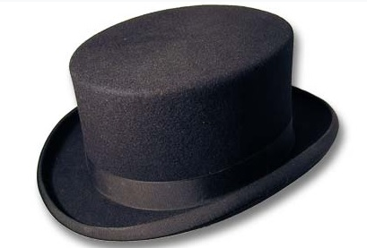

LA CHISTERA - Humor y
mágia
Quiénes somos
La chistera es un grupo de artistas dedicados al mundo de la magia, la comedia y el espectáculo. Entre nosotros podrás encontrar humoristas, magos, showmen, etc.
Tenemos multitud de espectáculos y números variados:
- Mágia
- De Salón
- Ilusionismo
- Close Up
- Chistes Variados
- Paroridas de Personajes Famosos
- Malabarismo
Si usted o su empresa necesita crear un espectáculo y no quiere quedar decepcionado no dude en escribirnos AHORA MISMO. Nuestra direccion es:
chistera@chistera.es
Un ejemplo de nuestro repertorio
Cada día mostramos ejemplos distintos de nuestro amplísimo y novedoso repertorio de chistes:
- Están 1023 gigabytes en una fiesta, llegan 1048576 más y dicen: ¿Nos hacemos un peta?
- ¿Cual es la diferencia entre batman y Bill Gates?
Que cuando batman luchó contra el pingüino ganó.
Enlaces a páginas relacionadas
A reirse Toca, ºJa, ja, ja! : Si te aburres, estás deprimido, o simplemente quieres reír, pásate por mi página y disfrutarás de los más de 110 chistes que tiene. ºCon posibilidad de enviar el tuyo!
1er Concurso de feos por internet: 1er Concurso de feos por internet participa y gana tu premio.
Albert Grauís Web: En esta pagina encontrarás un listado de dichos populares, y las 50 cosas que se deberían cambiar para mejorar la vida terrícola de nuestro querido planeta tierra